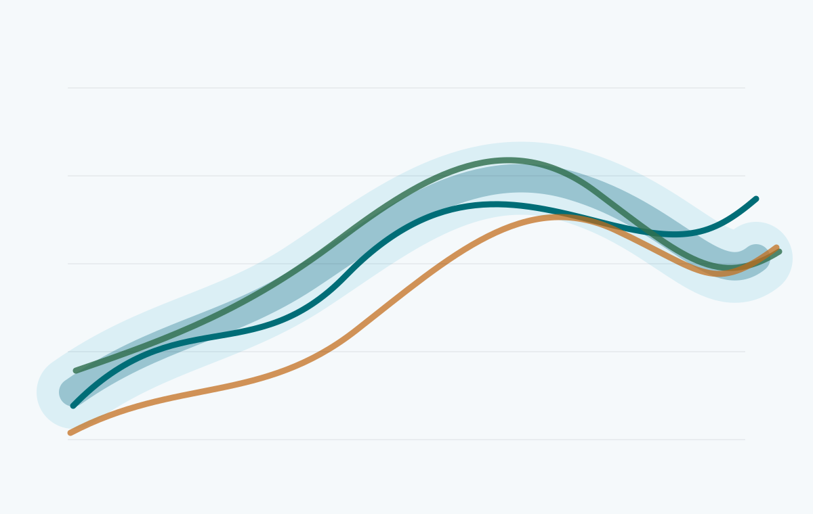

Numerical weather prediction
Model dynamics, physical parameterization, forecast verification, and error growth in short- to medium-range atmospheric prediction.
Our research connects atmospheric theory, numerical models, observations, and high-performance computing to understand weather and climate across scales.
Model dynamics, physical parameterization, forecast verification, and error growth in short- to medium-range atmospheric prediction.
Methods for combining observations and model states, diagnosing initial-condition sensitivity, and representing uncertainty in forecasts.
Mechanistic studies of circulation variability, climate extremes, land-atmosphere coupling, and process-level model evaluation.
Reproducible experiment systems, scalable diagnostics, workflow automation, and efficient handling of large geophysical datasets.
Selected project areas that translate the group research directions into focused modeling, data, and computing work.
Prediction systems
We evaluate how numerical model dynamics, physical parameterizations, and error growth shape short- to medium-range atmospheric forecasts.
Observations and uncertainty
This project connects observations, model states, and uncertainty diagnostics to improve initial conditions and understand predictability limits.

Climate and computing
We develop reproducible diagnostic workflows for climate variability, extremes, land-atmosphere coupling, and large geophysical datasets.